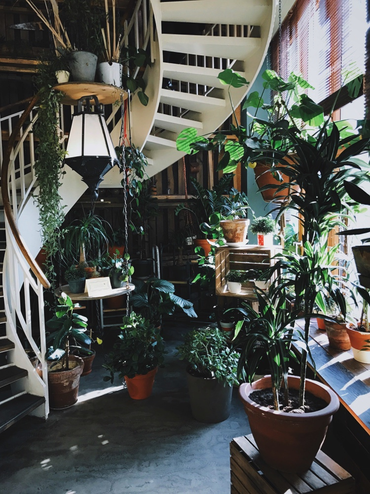
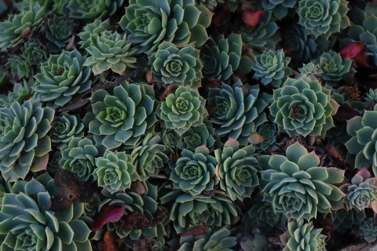

A houseplant is a plant that is grown indoors, such as residences and offices, namely for decorative purposes. Studies have also shown them to have positive psychological effects and as well as help with indoor air purification, since some species, and the soil-dwelling microbes associated with them, reduce indoor air pollution by absorbing volatile organic compounds including benzene, formaldehyde, and trichloroethylene.
While generally toxic to humans, such pollutants are absorbed by the plant and its soil-dwelling microbes without harm. Common houseplants are usually tropical or semi-tropical epiphytes, succulents or cacti. Houseplants need the correct moisture, light levels, soil mixture, temperature, and humidity. As well, houseplants need the proper fertilizer and correct-sized pots.
A 2015 study showed that active interaction with houseplants "can reduce physiological and psychological stress compared with mental work".

The phenomenon of biophilia explains why houseplants have positive psychological effects. Biophilia describes humans’ subconscious need for a connection with nature. Having plants in indoor living areas can have positive effects on physiological, psychological and cognitive health.
Humans enjoy looking at things that are not boring but also not too complex. The presence of plants and nature-inspired designs is restorative and not dull like the modern cookie cutter designs.
